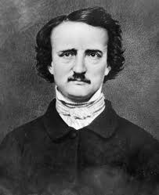

Edgar Allan Poe was born in Boston and had a rough childhood, starting with his mother dying when he was 2 years old. After forming a debt and drinking problem, Edgar joined the U.S. Army in when he was 18. After leaving the military, he became the editor of the Southern Literary Messenger. He would bounce around other publications writing poetry and short stories until his death on October 7, 1849.
